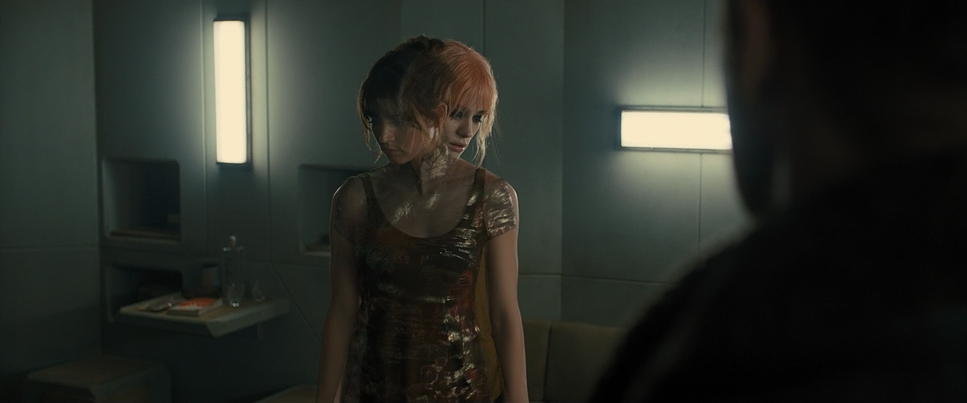

★★★★★ The Matrix
Director: The Wachowskis
A groundbreaking film that redefined sci-fi cinema. The exploration of simulated reality and AI still feels incredibly relevant.
Hello I am Yad, a software engineering student who loves watching films! This is a digital notebook for tech-centered stories! please enjoy my tech film diary that includes favorites, my watchlist and some reviews!

A groundbreaking film that redefined sci-fi cinema. The exploration of simulated reality and AI still feels incredibly relevant.
An important topic, but the delivery can feel overly dramatized. While it raises valid concerns about social media’s influence, its tech critique sometimes lacks depth.
A sleek sci-fi thriller where technology enables dream manipulation. Nolan uses this concept to explore memory, control, and reality — making tech feel intimate, not distant.